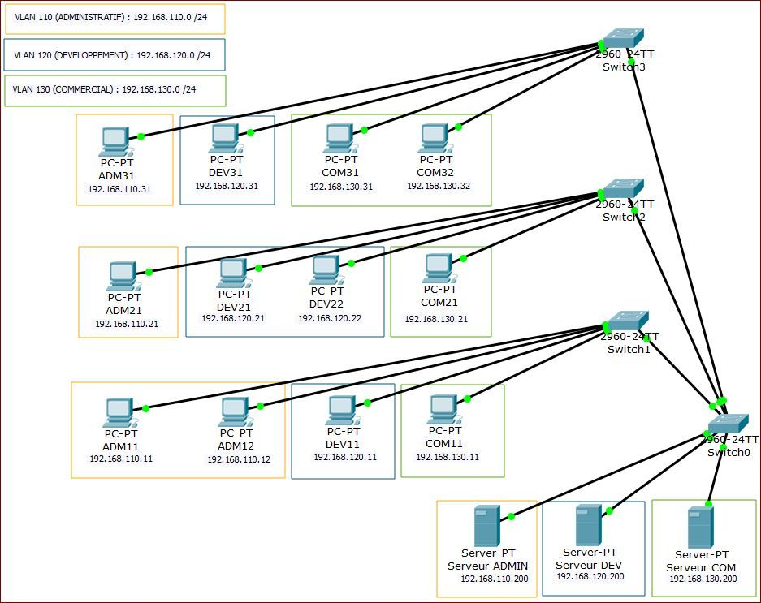

BTS · SISR
Segmentation par VLAN (Packet Tracer)
Isoler les services d'une entreprise en VLAN et faire communiquer les réseaux de façon maîtrisée.
- Cisco Packet Tracer
- VLAN
- Commutateurs
Contexte
Exercice de segmentation pour séparer administration, développement et commercial.
Résultat
Réseaux isolés par VLAN, liaisons entre commutateurs et serveurs configurées et testées en simulation.
Étapes de réalisation
- Plan. Définition des VLAN et du plan d'adressage.
- Commutation. Ports d'accès et liens inter-commutateurs.
- Tests. Vérification de la communication au sein de chaque VLAN.
Captures

Compétences
- VLAN
- Cisco
- Réseau